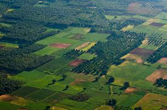
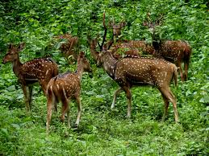

Idukki, a landlocked district of Kerala, is one of the most nature-rich areas in Kerala with more than half of the area covered with forest. This rugged hill resort is known for its wildlife sanctuaries, beautiful bungalows, tea factories, rubber plantations and forests. Idukki's speciality lies in 650 feet long and 550 feet high arch dam across the Kuravan Kurathi mountain, which is the largest in the country. Anamudi, which is the highest peak in India, south of the Himalayas, is also located in Idukki. Idukki is one of the districts in the state that has abundant scope for promotion of eco-tourism if proper infrastructure and promotional activities are provided.

| Ramakkalmedu | |
|---|---|
|  | Ramakalmedu is a historic site with a Monument to Kuravan and Kurathi – a large statue that depicts the Sangam Period and Sangam landscape of Kerala and Tamil Nadu. The monument provides a panoramic view of Tamil Nadu villages and towns, including Cumbum, Theni, Kombai, Thevaram, Uthamapalayam, Bodinaykannor and Vaiga. Rolling green hills and the fresh mountain air make Ramakalmedu an enchanting retreat. The view is striking at dusk when all these towns in Tamil Nadu, are lighted. Rama – kal – medu literally means "Land of Rama’s Stone" or "Land where Lord Ram set his holy foot" (Lord Ram is a Hindu God in the epic Ramayana). One story says that Lord Ram along with Lakshman (younger brother of Lord Ram who was accompanying him during his 14 years exile in the forest) kept his foot at the top of Ramakkalmedu in search of his wife Lady Sita, who was abducted by the Demon King of Lanka, Lord Ravan. The Twin statue was sculpted by C.B Jinan and erected on the top of the hill in the year 2005. The statue depicts two historical characters who have some connection with the construction of the Idukki Dam. The Idukki Arch dam connects two massive rock hills named Kuravan Mala (Kuravan Hill) and Kurathi Mala(Kurathi Hill). |
| Periyar National Park | |
|---|---|
|  | Periyar National Park & Wildlife Sanctuary, locating in Thekkady is the perfect example of nature's bounty with great scenic beauty and rich biodiversity. In this astounding location of Kerala, the Periyar National Park is considered as the most protected area for the elephants and the tigers. One of the most renowned national parks in South India, the Periyar National Park is set high at the Western Ghat ranges. The protected area is widespread along the area of 925 sq km (357 sq mi). The rest of 350 sq km (140 sq mi) of the core zone was declared as the Periyar National Park in the year 1982. The park is being adorned with a picturesque lake at the heart of the sanctuary which is an artificial 100 years old lake at Thekkady and is basically known for its wild elephants and thickly established Western Ghats forests. Many of the intense valleys of Periyar contain tropical evergreen forest with extremely thick tree cover with hardly any sun-rays to get penetrated. These trees are fully grown at the amazing heights of up to 130-140 feet. Some of the areas in the park contain marshy grasslands near the edges of the lake and other water bodies. Spread out across the park are also patches of semi-evergreen forest used as important cover by many of the animal species. |